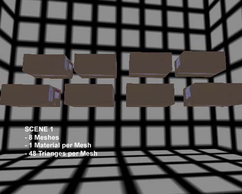
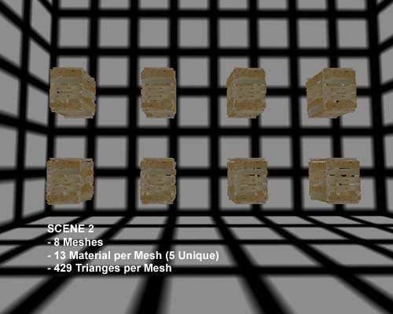

Mesh Optimization
Document Summary: This document covers the optimization of static meshes to gain performance. This is fairly involved and somewhat technical. For advanced users.
Document Changelog: Last updated by Tom Lin (DemiurgeStudios?), for document summary. Original author was Albert Reed (DemiurgeStudios?).
Basics
Before breaking into this section on detailed mesh optimization, be sure you've read through
LevelOptimization. Optimizing a level will yield much more significant results. Build meshes with the ideas contained herein but make sure to perform level-wide optimizations first. Before beginning any significant optimization, always attempt to identify the performance problem before trying to speed things up. If you optimize the wrong thing, you might not get any improvement at all.
The performance implications of modular level-design are a bit tricky as they vary from platform to platform. In general, there are two types of rendering that take place,
Batched and
Un-Batched. There are tradeoffs for each. Ask a programmer which you are using since it drastically affects what you should worry about for optimization. In general, folks developing for consoles are using un-batched rendering and batched rendering on the PC. There are two considerations when doing optimizations, performance and memory, we'll cover both where applicable.
For the purposes of this discussion, we'll be referring to the following scenes:


Scene 1
| Stat | Batched | Un-Batched |
| Triangles | 384 | 384 |
| Batches | 1 | 0 |
| UnsortedSections | 8 | 8 |
Scene 2
| Stat | Batched | Un-Batched |
| Triangles | 3936 | 3936 |
| Batches | 5 | 0 |
| UnsortedSections | 40 | 104 |
We've left out the sorted triangle numbers, because they were always zero. Triangles only need to be sorted if they are alpha'd.
The following sections will outline various times, and memory amounts and describe how to plan your mesh construction to run as fast as possible. The best way to determine which of these factors you will need to optimize is to run tests. Take a scene you'd like to optimize and perform the recommended optimizations for each value, not worrying about appearance or final art. When you perform an optimization that provides the desired framerate boost, go ahead and finalize the work.
Comparing Batched to Un-Batched
In un-batched rendering, each material in each mesh is rendered separately. We'll call the set of triangles on a mesh that share a material a "Section". The tables above give the number of sections being rendered for each scene. Batched rendering basically means that the meshes in the level are combined in memory and rendered as larger blocks. In general, this method of rendering is faster because it produces less CPU overhead. Each "Batch" is a collection of "Sections".
As a general rule, sections for batched-render will render faster than sections for un-batched rendering because all of the sections that use the same material are rendered together.
Optimizing for Batched Rendering
If you're using batched rendering which uses considerably more memory, chances are you're not too concerned about how big your memory footprint is.
We'll focus this discussion around raw performance.
A "Batch" is a collection of triangles stored in system memory and then passed off the video card at runtime. Batches are broken into sections which are rendered one at a time. More-or-less every triangle that uses the same material will be placed in a batch. Obviously adding more triangles will still impact performance, but tracking the number of batches will also become very important. We'll discuss the optimization of the following times
Batch Setup Time - The amount of time spent by the CPU preparing batches to be rendered.
Section Setup Time - The amount of time spent by the CPU preparing sections for the GPU.
Section Drawing Time - The amount of time spent by the GPU rendering the sections
For batched rendering, you will likely find that your slowdowns are caused by batch setup time or Section Drawing Time. Generally speaking, Section Setup Time doesn't consume tons of milliseconds.
Optimizing Batch Setup Time
Batch setup time can be reduced by cutting down on the total number of batches currently being rendered. Because each material on the screen is separated into a different batch, optimizing this time basically amounts to cutting down on the total number of materials in a scene.
Optimizing Section Setup Time
Section setup time can be optimized by reducing the overall number of sections, and by making them easier to process.
To review - a section in batched rendering is composed of those triangles that use a single material in a static mesh. For batched rendering, if the same material is used multiple times in the Materials list of the static mesh, all those uses are packed into a single section. For example, in Scene 2, the boxes have 13 materials in the material list, but many of them use the same texture. There are only 5 unique textures used, and 8 meshes, for a total of 40 sections. It is worth noting that there is still some overhead for having duplicate materials in the materials list, so the practice should be avoided.
The number of sections can be reduced by using fewer materials on a per-mesh basis. If the crates in Scene 2 used just one texture then they would only have 1 section each which would speed things up.
Because the end goal is to squeeze as many triangles on to the screen at a time and still have a good framerate, it is worth considering how efficient your meshes are able to render. To get the most efficient rendering time per triangle, you would want each section to have around 2000 triangles given your average T&L accelerated video card. Obviously, having these larger meshes is frequently impractical, and not worth the added effort given the smallish performance win. Section setup time is much more significant in Un-Batched Rendering
Optimizing Section Drawing Time
The time it takes to draw a section is governed by the video card you're running on. Different video cards are good at rendering different kinds of materials under different circumstances. As a general rule on PCs, this value is probably governed by fillrate. You can see visually using the fillrate render mode in UnrealEd
? and in-game.
Optimizing for Un-Batched Rendering
We'll explain how to optimize each of the following:
Mesh Setup Time - The amount of time it takes the CPU to prepare a mesh for rendering.
Section Setup Time - The amount of time it takes the CPU to prepare a section for rendering.
Section Drawing Time - The amount of time it takes the GPU to actually draw the section.
Mesh Memory Footprint - The amount of memory taken up by a given StaticMesh. with un-batched rendering, repeated meshes only exist in memory once.
Optimizing Mesh Setup Time
Mesh setup time is not mostly constant for every mesh. For un-batched rendering keeping the number of meshes in view to a minimum is the the best way to keep cut down this time. Combining small meshes into larger meshes is one good way to go about this. Great examples of places to speed things up are by combing tiles described in
WorkflowAndModularity document. Additionally, in outdoor scenes using
Decolayers with tiny meshes will be subject to problems, use them sparingly.
Section Setup Time
The same rules for optimizing mesh setup time apply to section setup time for meshes. Like mesh setup time, the best way to reduce the this cost is to cut down the number of sections. Unlike batched-rendering sections that use the same material on a given mesh are not combined into single sections, making redundant materials in a mesh especially bad in the un-batched rendering method.
Section Drawing Time
This is the same for batched and unbatched rendering. Take a look at the
batched rendering description of this time.
Mesh Memory Footprint Optimization
The amount of memory used by a given mesh is determined by a number of factors. First, collision information in static meshes consumes lots of memory. If you can turn off collision for a given material, and use "Simple" collision, do that. Check out the
CollisionTutorial for more details on cutting down the memory used by collision
Un-batched rendering is great for cutting down memory, because the static mesh vertex data only need to exist once for each static mesh. That means, if you duplicate a mesh in a level, the information about its vertices only needs to remain once. Take ample advantage of the techniques discussed in
WorkflowAndModularity and you'll save tons of memory in the process.